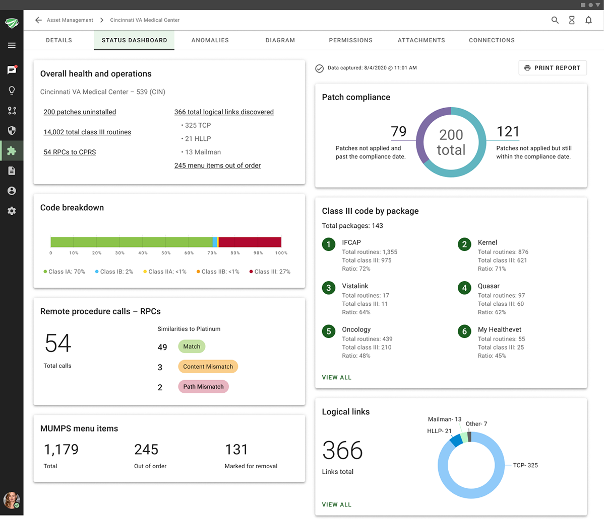
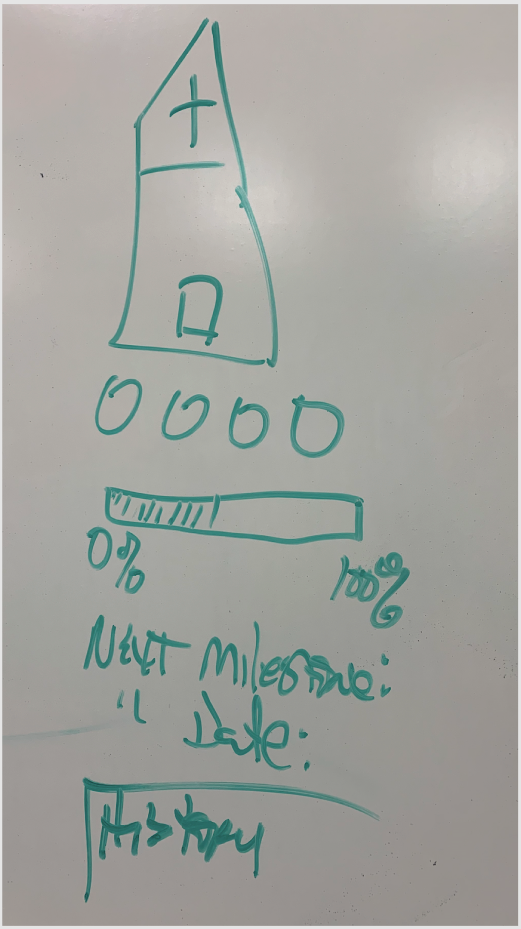
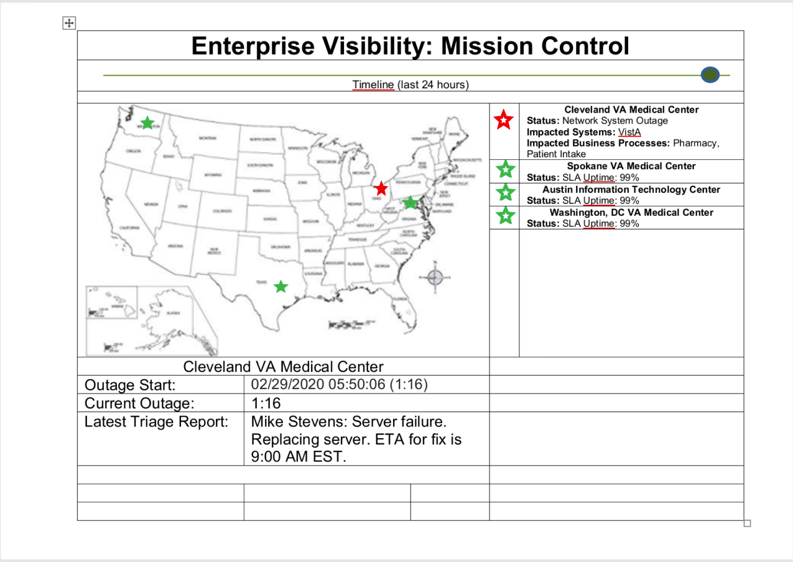
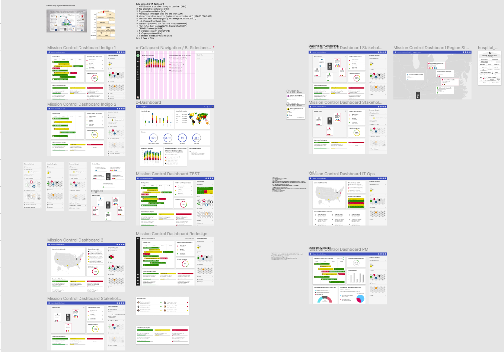
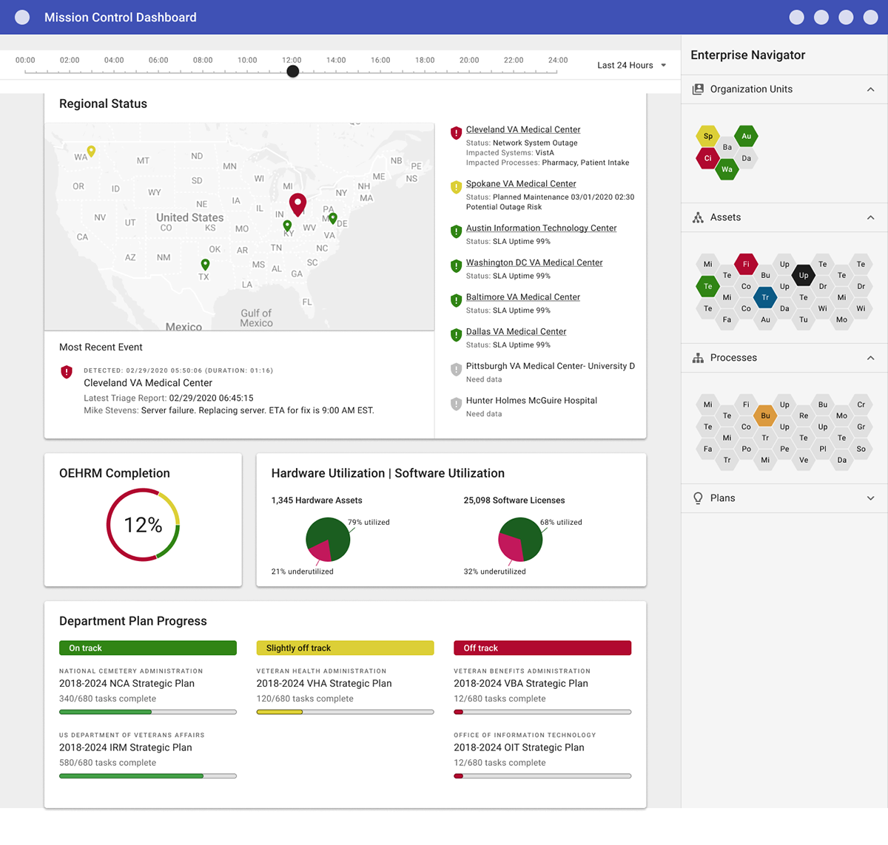
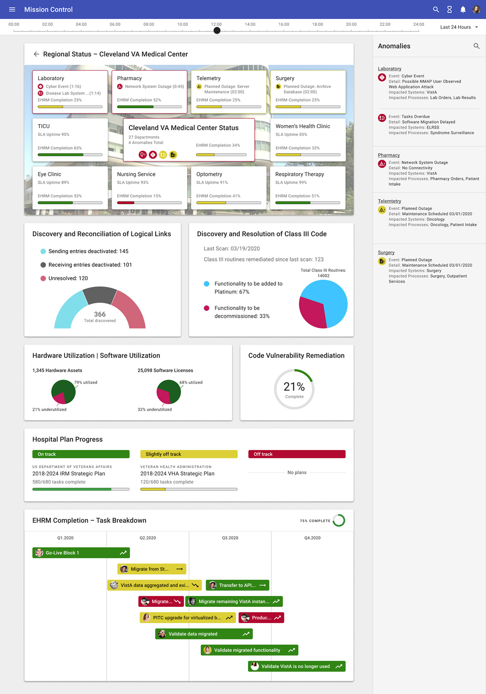
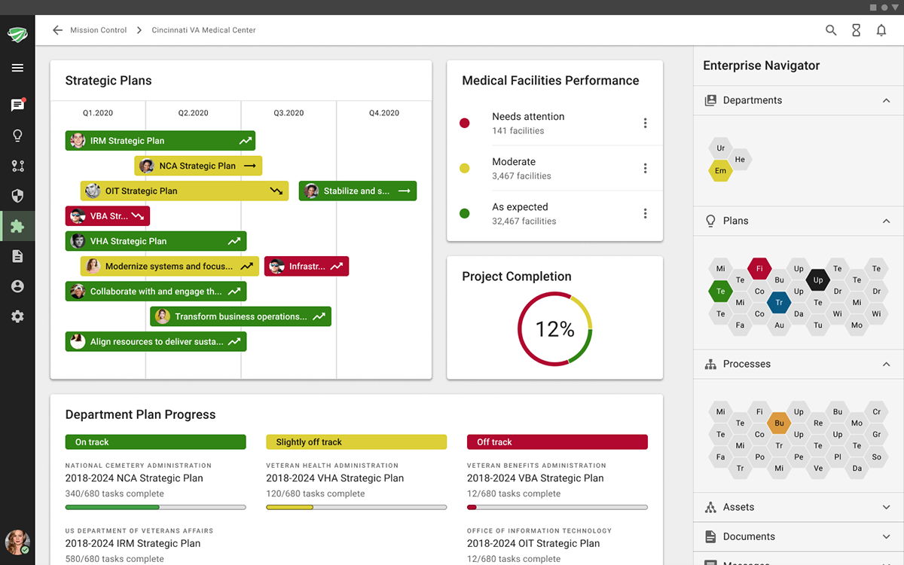

EAGLE6 Status Dashboard
Dashboards for VA stakeholders and analysts, designed to support the department's migration from the legacy MUMPS system to the Cerner electronic health record platform.

TL;DR
I was the lead designer on dashboards for VA stakeholders and analysts, built to support the department's migration from the legacy MUMPS system to the Cerner electronic health record platform. Two rounds of prototyping, testing, and stakeholder feedback on a tight timeline produced a functional, demo-ready dashboard.
Overview
EAGLE6 partnered with the Department of Veterans Affairs to facilitate their transition from the legacy MUMPS system to the Cerner electronic health record platform. EAGLE6 is an application built to secure large enterprises by detecting unknown vulnerabilities before they expose systems to risk.
Part of the VA's need was knowing which hospitals and clinics were not up to their gold standard and how to remediate that. EAGLE6 could also detect external links to non-networked systems and alert analysts, so that connections to things like heart monitors and EKG machines would not be interrupted.
Due to the sensitive nature of the project, the data has been scrubbed and the live app is unavailable to demo.
The Problem
The VA, a vast organization, faced challenges due to outdated technology systems, necessitating a comprehensive modernization effort. As part of that initiative, they needed to migrate to Cerner. Migration comes with risks and challenges, and EAGLE6's goal was to enable it with little to no interruption to the doctors and veterans who depend on these systems to work and live.



The working board, zoomed out.
Define and Ideate
Given the project's accelerated timeline, we started ideation and prototyping at the same time to speed up solution development.
Once I had the pain points, I worked with our developers to determine what data we could surface that would help solve the users' problems.


Testing and Iteration 2
Following multiple testing sessions and stakeholder feedback, I began the second iteration and refined the design based on what users told us. Armed with a better understanding of their needs, and the data our backend developers could make available, I prototyped several methods of data visualization to test with our users.

Conclusion
Because of the tight timeline, I had time for two rounds of iterating, testing, and feedback before working with development to get a demo-ready product available to the business.
Despite the project's scope and stringent timeline, our team delivered a functional dashboard, which came down to close collaboration and agile design practices. Data visualization is something I've become enamored with, and I continue to study how best to present data for concise, accurate consumption by users.
Skills Applied
Design craft: Dashboard design, data visualization, interaction design, rapid prototyping.
Research & validation: Usability testing, stakeholder feedback, iterative design.
Cross-functional: Partnering with backend developers on available data, agile delivery, enterprise and federal stakeholders.